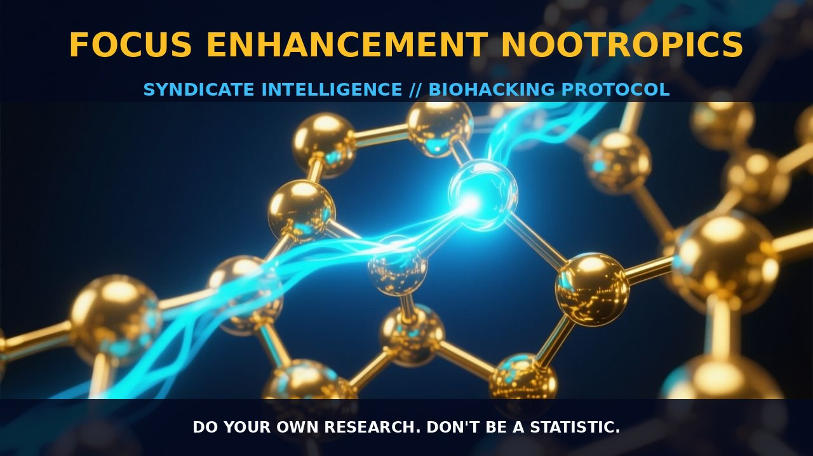

Mechanisms of Focus Enhancement Nootropics

1. The Mechanism
Focus enhancement nootropics operate by modulating various neurotransmitter systems and neural pathways to optimize cognitive functions. These nootropics often target cholinergic, dopaminergic, and glutamatergic pathways, enhancing neurotransmitter availability, receptor sensitivity, and synaptic plasticity. For instance, cholinergic nootropics such as Huperzine A and Centrophenoxine boost acetylcholine levels, crucial for memory and learning.
Dopaminergic nootropics like L-Theanine and L-DOPA increase dopamine availability, which is vital for attention and motivation. Additionally, glutamatergic nootropics such as L-Tyrosine and Ginkgo Biloba enhance glutamate-mediated neurotransmission, supporting synaptic efficacy and cognitive performance. Each nootropic can interact with multiple receptors and signaling pathways, creating a synergistic effect when combined in a stack.
Furthermore, focus enhancement nootropics often act on the adrenergic system, influencing norepinephrine levels to enhance alertness and cognitive focus. Compounds like Rhodiola Rosea and Bacopa Monnieri modulate the HPA axis, reducing cortisol and promoting a calm yet focused state. These nootropics also exhibit antioxidant and anti-inflammatory properties, mitigating oxidative stress and neuroinflammation that can impair cognitive functions. By modulating these intricate biological pathways, focus enhancement nootropics can optimize brain function and provide sustained cognitive benefits.
2. Biological Leverage
The biological leverage of focus enhancement nootropics lies in their ability to enhance neural efficiency and connectivity, thereby improving cognitive performance. By increasing neurotransmitter availability and optimizing receptor sensitivity, these nootropics can bolster synaptic transmission and neuronal plasticity. For example, acetylcholine esterase inhibitors like Huperzine A can elevate acetylcholine levels, enhancing memory formation and retrieval.
Similarly, dopamine precursors such as L-DOPA can increase dopamine availability, which is crucial for attention and executive function. Focus enhancement nootropics can also modulate the adrenergic system, influencing the release of norepinephrine to enhance vigilance and cognitive arousal. Compounds like Rhodiola Rosea and Bacopa Monnieri have been shown to reduce cortisol levels, promoting a calm yet focused state. These nootropics also exhibit antioxidant and anti-inflammatory properties, protecting neurons from oxidative stress and neuroinflammation that can impair cognitive functions.
By enhancing neural efficiency and connectivity, these nootropics can optimize cognitive performance and provide sustained mental clarity.
3. Tactical Implementation
For optimal implementation, focus enhancement nootropics should be used in a well-structured stack to achieve synergistic effects. A common approach is to combine cholinergic nootropics with dopaminergic and glutamatergic agents to enhance cognitive functions. For instance, a typical stack might include Huperzine A for acetylcholine enhancement, L-DOPA for dopamine availability, and L-Tyrosine for glutamate-mediated neurotransmission.
Additionally, incorporating Rhodiola Rosea and Bacopa Monnieri can help reduce cortisol levels and promote a calm yet focused state. Dosage ranges for these nootropics typically vary, with some requiring low-to-moderate amounts and others requiring moderate-to-high amounts. For instance, Huperzine A is often taken in doses of 50-200 mcg, while L-DOPA is typically dosed in the range of 100-300 mg. L-Tyrosine is often taken in doses of 500-1000 mg, and Rhodiola Rosea and Bacopa Monnieri can be dosed around 300-600 mg and 300-450 mg, respectively.
Timing is also crucial, with some nootropics being more effective when taken on an empty stomach and others being better absorbed with food. Stacking these nootropics can enhance cognitive performance by optimizing neurotransmitter availability and receptor sensitivity. It is important to note that individual responses may vary, and it is advisable to start with lower doses and gradually increase as tolerated. Additionally, combining these nootropics with healthy habits such as proper sleep, exercise, and diet can further enhance cognitive benefits.
Prostar Life Hack
Create a nootropic stack that includes Huperzine A, L-DOPA, L-Tyrosine, Rhodiola Rosea, and Bacopa Monnieri for a synergistic boost in focus and cognitive performance. Begin with lower doses and gradually increase as needed. Ensure proper timing and consider lifestyle factors such as sleep and exercise for optimal results.
[ AUTHOR: LEAD TECHNICAL RESEARCHER ]